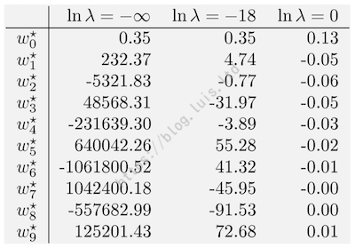

ML入门-线性回归简介
1. 什么是回归
假设有一数据集 $D = { X_i, y_i }^N_{i = 1}$，其中 N 为训练样本数目，i 为样本索引，$X_i$ 为第 i 个样本的输入特征，$y_i$ 为第 i 个样本的输出/响应，那么：
根据训练样本 D，学习一个从输入 $X$ 到输出 $y$ 的映射 $f$，使得 $y_i = f(X_i)$，且 $y_i \in R$，这就是回归任务。
@注：没有特殊说明的情况下，$W$、$X$、$y$ 等均为矩阵（一维矩阵有时作为向量使用）形式，在强调向量性质时使用 $\vec{X}$、$\vec{W}$、$\vec{y}$ 表示。
回归任务的一个重要特征即为 $y_i \in R$，当 $y_i$ 取类别型数值时，就变成了分类任务。
当学习到回归任务的映射 f 后，即可对新的输入数据 $X$ 预测其输出 $\hat{y} = f(X)$。
2. 什么是线性回归
线性回归是最简单的回归模型之一：即从输入 $X$ 到输出 $y$ 的映射 $f$ 为线性关系：
$
\begin{aligned}
y &= f(X) = W^T X
\ &= [w_0, w_1, …, w_D] \begin{bmatrix} 1 \ x_1 \ … \ x_D \end{bmatrix} = w_0 + \sum^D_{j = 1} w_j x_j
\end{aligned}
$
$X = (1, x_1, …, x_D)^T$
其中，$w_0$ 为截距项/偏置（bias），$w_j$ 为第 j 维特征的权重/回归系数，$x_j$ 为第 j 维特征，D 为特征维数，j 为特征索引，$X$ 为特征向量。
$X$ 在 D 维特征的基础上，再增加一个常数项1，与 $w_0$ 相乘作为截距项，是为了表达式更简洁。也即，$b（bias）= w_0$。
假设有这么一个例子：根据在线广告投入费用预测每月电子商务销售量，其数据分布和预测直线如下图所示：
在 Scikit-Learn 中，线性回归模型的建立过程大致如下：
1 | from sklearn.linear_model import LinearRegression |
在图例中，所有的广告费用构成了 X_train，所有的销售量构成了 y_train，将数据对应输入到 fit() 方法中即可，以例中的数据解得最后的直线方程为：
$$
y = 123.94 + 167.89 \cdot x
$$
其中 $w_0 = 123.94$，将需要预测的的输入 2.8 代入 x 即可求得 $\hat{y} = 593.78$。
不过需要注意的一点是，Scikit-Learn 中训练数据 $X$ 是一个二维数组，在本例中，输入只是长度为 6 的一维数组，因此需要先转换成 n 行 m 列的形式，使用：
1 | X_train = X_train.reshape(-1, 1) |
来指定列数为 1，行数自动调整。
fit() 完后，lr 这个实例化的线性回归模型对象内就会具有一个默认配置的线性回归参数 $W$，这些参数在经过 fit() 训练后就存在了 lr 对象内部，根据这些参数生成的直线即为图中绿色直线，这就是一个简单的线性回归模型了。
3. 线性回归损失函数
仍然以 “广告投入 - 销售量” 为例，在上文使用默认配置训练后得到了绿色的直线，假设通过手动配置，训练出了另一条蓝色直线：
显然，蓝色直线也是符合线性回归的定义的，因此需要使用预测残差来评价哪个线性模型更优。
3.1 预测残差
根据例中表格数据可以求得：
- 绿色直线在训练集上的预测残差为：-41.20, -35.64, 33.92, -8.92, -11.08, 62.91
- 蓝色直线在训练集上的预测残差为：14, 10, 70, 204, 25, 142
由于绿色直线的预测残差有负值，在计算残差总和时会发生抵消，因此考虑使用平方计数，也就得到残差平方：
$$
r^2 = (y - \hat{y})^2
$$
用残差平方来计算残差总和，就得到残差平方和 RSS（Residual Sum of Squares），根据定义显然可得其表达式为：
$$
RSS = \sum^N_{i = 1} r^2_i = \sum^N_{i = 1} (y_i - \hat{y}_i)^2
$$
根据定义求得：
- 绿色直线 RSS = 8277.32
- 蓝色直线 RSS = 67601
RSS 可以表示模型预测的整体性能，RSS 最小亦称为为最小二乘 OLS（Ordinary Least Square）。RSS 越小的直线预测越准确，因此显然，绿色直线比蓝色直线要好得多。
3.2 三种损失函数
在机器学习中，用损失函数 L（Loss Function）来度量样本真实值与模型预测值之间的差异，该差异用预测残差 r（Residual）来表示：$r = y - \hat{y}$。
常见的损失函数有三种：
- L2 损失
- L1 损失
- Huber 损失
损失函数的意义在于，使得模型趋向于最小训练集上的损失（经验风险最小），也即在模型训练时给予一个训练目标，使得训练出来的模型在训练集上的损失总和最小。由于模型的参数即为 $W$，因此定义一个目标函数：
$$
J(W) = \sum^N_{i = 1} L(y_i, \hat{y}_i)
$$
则模型训练的目标也就是求：$J(W)$ 最小。
3.2.1 L2损失
在前面的例中，当损失函数采用 RSS 时，损失函数为二次函数，范数为 2，因此也称为 L2 损失（差的平方即为距离的 L2 模长），表达式为：
$$
L(y, \hat{y}) = (y - \hat{y})^2 = r^2
$$
此时目标函数即为：
$$
J(W) = \sum^N_{i = 1} L(y_i, \hat{y}i) = \sum^N{i = 1} r^2_i
$$
L2 损失是二次函数，因此最大的优点就是：处处可导，优化计算方便。但缺点也很明显：对噪声敏感。若数据中某点的预测残差 r 特别大（下图红点），经过平方放大后 $ r^2 $ 会更大，则会在模型中占主导作用，由于模型的训练目标是使得目标函数最小，在 L2 损失的模型中，也即使得 RSS 最小，因此会导致模型向该噪声点偏移（变为下图橙线）：
Scikit-Learn 中使用 L2 损失的线性回归模型：
1 | # 使用 L2 损失（线性回归默认使用 L2 损失） |
3.2.2 L1损失
为了减弱噪声点对模型的影响，同时保留损失函数“避免抵消正负”的特性，除了采用平方之外，还可以采用绝对值。当损失函数采用绝对值计量预测误差总和时，损失函数为绝对值函数，范数为 1，因此也称为 L1 损失（差的绝对值即为距离的 L1 模长），表达式为：
$$
L(y, \hat{y}) = |y - \hat{y}| = |r|
$$
此时目标函数即为：
$$
J(W) = \sum^N_{i = 1} L(y_i, \hat{y}i) = \sum^N{i = 1} |r|_i
$$
L1 函数是绝对值函数，因此最大的有点是：对噪声不敏感：
但缺点同样明显：在零点处左右导数不相等，因此不可导，不便于优化计算。
3.2.3 Huber损失
为了结合 L2 和 L1 损失的优点，同时规避二者的缺点，可以考虑选择一个新的损失函数：其在靠近零点处表达式为 L2 损失，具有“可导”的优点，在远离零点处表达式为 L1 损失，具有“抗噪声”的优点，得到如下表达式：
$$
L_{\delta} (r) = \left {
\begin{aligned}
& \frac {1} {2} r^2 && {|r| \le \delta}
\
\delta |r| & - \frac {1} {2} \delta^2 && {Otherwise}
\end{aligned}
\right.
$$
或代入预测残差：
$$
L_{\delta} (r) = \left {
\begin{aligned}
& \frac {1} {2} (y - \hat{y})^2 && {|r| \le \delta}
\
\delta |y & - \hat{y}| - \frac {1} {2} \delta^2 && {Otherwise}
\end{aligned}
\right.
$$
Huber 损失的图像如下：
Huber 表达式中对 L2 和 L1 损失部分均有变形：
- 取 L2 损失的部分，添加系数 $\frac {1} {2}$ 的目的是抵消 $r^2$ 在求导时产生的系数 2。
- 取 L1 损失的部分，添加一项 $- \frac {1} {2} \delta^2$ 的目的是使得函数在交点 δ 处（图中黑点标识）连续（当取 $|r| = \delta$ 时，代入函数两段函数值相等）。
Scikit-Learn 中实现了采用 Huber 损失的回归模型：HuberRegressor，其调用接口几乎相同：
1 | # 使用 Huber 损失 |
4. Scikit-Learn中的线性回归
最小二乘（OLS）线性回归中，目标函数 $J(W)$ 只考虑了模型对训练样本的拟合程度：
$$
J(W = \sum^N_{i = 1} L(y_i, f(X_i; W))^2 = ||y - X W||^2_2
$$
其中 $f(X_i; W) = \hat{y}$
Scikit-Learn 中的线性回归模型 LinearRegression 就是最小二乘线性回归：
1 | # class sklearn.linear_model.LinearRegression |
（1）LinearRegression 类参数
fit_intercept：
模型是否包含截距项。
如果数据在预处理时已经中心化（训练样本集 y 均值为0，则训练结果 $W_0$ 即为0），则可设置为 False。
normalize：
是否对输入特征 $X$ 做归一化。
对每一条样本，减去均值并除以 L2 模，使得模长变为 1，因此对数据归一化处理会使得超参数学习更加 Robust，且几乎和样本数目没有关系。但在回归中对样本归一化用的比较少，通常对特征标准化。
copy_X：
是否拷贝数据 $X$。
当设置为 False 时，对 $X$ 的操作会在原始数据集上完成从而覆盖原始数据。当原始数据后续不再需要使用时可以设置为 False 节省内存。
n_jobs：
并行计算时使用 CPU 的数目。
设置为 -1 表示使用所有 CPU 核，与显示设置为 CPU 核数目的效果相同。
（2）LinearRegression 类属性
coef_：
回归系数，与特征维数相同。
也即特征权重 $\hat{W}_0$，如果是多任务回归，则与标签 y 的维度相同。
intercept_：
截距项。
也即偏置（bias）：$b = \hat{W}_0$
（3）LinearRegression 类方法
fit(X, y[, sample_weight])：
训练模型。
X, y 为训练特征和标签，可通过 sample_weight 设置每个样本的权重。例如某个数据由多个设备采集，则高精度设备采集到的数据可以提高权重。
predict(X)：
使用已训练完成的模型进行预测。
输出即为预测值 $\hat{y}$
score(X, y[, sample_weight])：
评估模型性能，返回模型预测的 $R^2$ 分数（y 与 $\hat{y}$ 的差异）。
根据输入 X 利用模型计算出预测值 $\hat{y}$ 并和真实值 y 比较。详见回归模型评价指标部分。
@注：关于归一化、标准化、中心化的参考理解：
（1）归一化：①把数据映射到区间 (0, 1) 或 (-1, 1)，主要为了数据处理方便。②把有量纲表达式转换为无量纲表达式，便于不同量级或单位的指标能进行比较和加权。
（2）标准化：将数据转换为均值为 0（每个特征都减掉原始数据中该特征的均值），且标准差为 1。
（3）中心化：将样本数据的输出 y 转换为均值为 0。
5. 欠拟合与过拟合
OLS 中，目标函数只考虑了模型对 训练样本 的拟合程度：
$$
J(f) = RSS(f) = \sum^N_{i = 1} L(y_i, \hat{y_i}) = \sum^N_{i = 1} L(y_i, f(x_i)) = \sum^N_{i = 1} (y_i - f(x_i))^2
$$
因此在训练样本集上残差和可以接近甚至等于零。原则上，任意复杂的模型，若能完全拟合训练数据，则称为过拟合。反之若模型连训练样本都无法较好的拟合，则称为欠拟合：
过拟合（Overfitting）：过于复杂的模型与训练数据拟合的太好，导致推广性和扩展性较差，因此和测试数据拟合的较差。
欠拟合（Underfitting）：过于简单的模型与训练数据尚且拟合的较差，更加不足以拟合测试数据。
@注：线性回归采用的线性模型比较简单，因此当特征维数不太高时，线性回归的过拟合现象通常不太严重。
5.1 $\sin$函数曲线实例
假设数据产生模型为：$y = \sin (2 \pi x) + \varepsilon$，其中 $\sin$ 函数如下：

$\varepsilon$ 为白噪声（随机噪声），假设方差为 0.03：
$
\varepsilon \sim N (0, 0.03^2)
$
通常，$\sin$ 函数需要使用无穷多阶多项式拟合，在此给定 $N = 10$ 共 10 个样本点，如上图中蓝点所示，采用 M 阶多项式拟合数据：
$
y = \sum^M_{j = 0} w_j x^j
$
当有 10 个样本时，最多可以解出 10 个未知数（$M = 9$ 时可取 $w_0, …, w_9$ 共 10 个系数），分别取 $M = 0, 1, 3, 9$ 并绘制图形如下：
（1）当 $M = 0$ 时，$y = w_0$，此时为了使 RSS 最小，则训练结果 $w_0 = \bar{y}$。
（2）当 $M = 9$ 时，可看出函数已经完全拟合了所有 10 个样本（函数通过每个样本点），此时训练集上 $RSS = 0$，但显然，该多项式并没有较好地表达数据的分布。
5.2 训练误差与测试误差
评价模型性能不能在训练集上评估，而应该在新的测试数据集上评估其 推广性 / 泛化能力（Generalization）。理论上，随着模型训练的进行，训练误差总是会越来越小，直到为零。根据如下误差计算公式：
$$
E_{RMS} = \sqrt {\dfrac {1} {N} \sum^N_{i = 1} (y_i - \hat{y_i})^2}
$$
统计各样本点的训练误差和测试误差：
从 $M = 3$ 开始，当模型复杂度继续增加时，训练误差继续下降，甚至为 0，而测试误差反而增大，此时发生了过拟合。在本例中，取 $M = 3$ 时的模型最理想，当 $M \in [4, 8]$ 时，虽然测试误差没有增加，但模型复杂度增加，这是没有必要的（奥卡姆剃刀原理）。
5.3 过拟合时的模型参数
统计当 $M$ 分别取 $0 \sim 9$ 时训练出来的模型系数 $w_0 \sim w_M$：
可以看到，随着阶数的增加，系数 $W$ 的绝对值越来越大，发生过拟合时，回归系数的 绝对值 / 平方值 很大，即使输入 $x$ 变化很小也可能带来 $y$ 很大的变化，函数的抖动很剧烈。
5.4 抑制过拟合
（1）增加训练样本数
当训练数据增多时，同样使用九阶多项式拟合，也不会产生明显的过拟合现象：
通常，样本数 N 为系数数量（特征维度）D 的 5 ~ 10 倍时训练效果比较好。
（2）目标函数增加正则项
在给定有限训练样本数时，可通过在目标增加正则项减弱过拟合现象。同样 10 个样本，使用 9 阶多项式拟合，但加入 L2 正则项，即可得到 岭回归（Ridge Regression）：
$$
J_{Ridge} (W, \lambda) = \sum^N_{i = 0} \left( y_i - \sum^M_{j = 0} w_j, x^j_i \right)^2 + \lambda \sum^M_{j = 1} w^2_j
$$
得到的拟合结果如下：
统计模型系数 W 随正则参数 $\lambda$ 的变化表：

当 $\ln \lambda = - \infty$ 时，$\lambda = 0$，此时相当于没有正则项。从表格可以看出，$\ln \lambda$ 越大，也即 $\lambda$ 越大，对模型复杂度惩罚越多，回归系数的 绝对值 / 平方值 越小，模型越简单。训练误差及测试误差与正则参数的关系如下图：
常用的正则项如下：
① L2 正则（L2 范数：平方距离）：$R(W) = ||W||^2_2 = \sum^D_{j = 1} w^2_j$
② L1 正则（L1 范数：绝对值距离）：$R(W) = ||W||1 = \sum^D{j = 1} |w_j|$
其中 $W$ 为模型参数，D 为参数的维数。这里需要注意，正则项求和中，只对 $1 \sim D$ 求和，也即不惩罚截距项（Bias）$b = w_0$，因此在实际任务中，通常需要先对数据作中心化处理，去掉截距项的影响。
还有一种 L0 正则（L0 范数：向量中非零元素数目）：$R(W) = ||W||_0$，但因为 L0 正则是 NP 问题，优化计算不方便，且 L1 范数是 L0 范数的最优凸近似，更方便优化计算，因此常用 L1 正则去近似 L0 正则。
L1 / L0 正则可以得到稀疏解，因此可以起到特征选择的作用，这是因为当确定某个系数 $w_j = 0$ 时，对应的特征 $x_j$ 是无用的，在某些场景（如医学等）下，下一次采样可考虑去掉该特征。
（3）减少噪声
另一种抑制过拟合的方法是减少噪声，但在实际面对的任务中，大部分情况下训练数据是给定的，因此增加或调整正则项是抑制过拟合最常用的手段。
@注：正则项发挥作用的理解：对于目标函数 $J(W, \lambda) = Loss + \lambda R(W)$，若模型过拟合，由于模型的训练目标是目标函数最小，过拟合时虽然 $Loss$ 可能较小，但模型过于复杂，回归系数的 绝对值 / 平方值 过大，导致目标函数整体较大，则增大 $\lambda$，为了使得目标函数最小，模型会趋于减小 $W$，从而减小模型复杂度（$W$ 元素的值减小或非零元素减少都是减小模型复杂度）。当处于欠拟合状态，则 $Loss$ 较大，模型复杂度尚且不够拟合训练数据，此时减小 $\lambda$，以增加模型复杂度。通常，训练的过程分为系数 $W$ 的训练和超参数 $\lambda$ 的训练，使用某个超参数训练出系数后，模型复杂度即确定下来，再去搜索最优的超参数即可。
6. 带正则的线性回归
最小二乘（OLS）线性回归中，目标函数 $J(W)$ 只包括训练集上的损失和（经验风险），也即仅考虑了模型对训练样本的拟合程度，因此可能会导致模型太过于复杂，甚至训练误差为0，产生过拟合。为此可在原目标函数中加入正则项，使得模型不会太复杂。则目标函数变为损失和 + 正则项：
$$
J(W, \lambda) = \sum^N_{i = 1} L \left( y_i, f(X_i; W) \right) + \lambda R(W)
$$
其中 R 为 Risk，表示 $W$ 复杂度的风险，新的目标函数也称为 结构风险。正则项的加入使目标函数符合奥拉姆剃刀（Occam’s Razor）原理：简单有效，选择能解释数据的模型中最简单的一个。
常用的正则项有：L2 正则、L1 正则。
（1）L2 正则：$R(W) = ||W||^2_2 = \sum^D_{j = 1} w^2_j$
（2）L1 正则：$R(W) = ||W||1 = \sum^D{j = 1} |w_j|$
其中 $W$ 为模型参数，D 为参数的维数。
6.1 岭回归
岭回归（Ridge）：L2 损失 + L2 正则 + LinearRegression。
岭回归正则项对截距项不施加惩罚，也即：
$$
R(W) = \sum^D_{j = 1} w^2_j，（j 从 1 开始）
$$
线性模型中增加常数项 $x_0 = 1$ 用于表示截距项：
$$
f(X; W) = W^T X = \sum^D_{j = 0} w_j x_j，（j 从 0 开始）
$$
当 j = 0 时，$x_0 = 1 \rightarrow w_0 x_0 = w_0$ 作为截距项。因此而得岭回归目标函数（目标函数的损失和部分不惩罚截距项，所以目标函数不需要从 0 开始）：
$$
\begin{aligned}
J(W; \lambda) &= \sum^N_{i = 1} L \left( y_i, f(X_i; W) \right) + \lambda R(W)
\ &= \sum^N_{i = 1} (y_i - W^T X_i)^2 + \lambda \sum^D_{j = 1} w^2_j
\ &= ||y - X W||^2_2 + \lambda ||W||^2_2
\end{aligned}
$$
Scikit-Learn 中的岭回归：
1 | # class sklearn.linear_model.Ridge |
（1）Ridge 类参数
alpha：
正则参数，也即正则项中的 λ。
目标：求 $\arg_W \min (||X W - y||^2_2 + \alpha ||W||^2_2)$
部分参数与 LinearRegression 相同。
其他参数与优化计算有关（详见优化求解部分）。
（2）Ridge 类属性
与 LinearRegression 相同。
（3）Ridge 类方法
与 LinearRegression 相同。
6.2 Lasso
Lasso（Least Absolute Shrinkage and Selection Operator）：L2 损失 + L1 正则 + LinearRegression。
Lasso 有三个关键点：
- Absolute：表示用的是 L1 正则，绝对值的模。
- Shrinkage：相比普通的线性回归，L1 正则会使得 $W$ 有一定收缩。
- Selection：L1 正则可能使得 $W$ 中某些元素变为 0 得到稀疏解，从而起到特征选择的作用。
Lasso 的目标函数为：
$$
\begin{aligned}
J(W; \lambda) &= \sum^N_{i = 1} L \left( y_i, f(X_i; W) \right) + \lambda R(W)
\
&= \sum^N_{i = 1} (y_i - W^T X_i)^2 + \lambda \sum^D_{j = 1} |w_j|
\
&= ||y - X W||^2_2 + \lambda ||W||_1
\end{aligned}
$$
Scikit-Learn 中的 Lasso：
1 | # class sklearn.linear_model.Lasso |
（1）Lasso 类参数
大部分与 Ridge 相同。
其他参数与优化计算有关（详见优化求解部分）。
（2）Ridge 类属性
与 LinearRegression 相同。
（3）Ridge 类方法
与 LinearRegression 相同。
6.3 弹性网络
弹性网络：L2 损失 + （L1 正则 + L2 正则） + LinearRegression。
在 性网络中，使用 ρ 表示 L1 正则所占比例，$\dfrac {(1 - \rho)} {2}$ 表示 L2 正则所占比例：
$$
R(W) = \sum^D_{j = 1} \left( \rho |w_j| + \dfrac {(1 - \rho)} {2} w^2_j \right)
$$
弹性网络的目标函数：
$$
J(W; \lambda; \rho) = \dfrac {1} {2N} ||y - X W||^2_2 + \lambda \left( \rho ||W||_1 + \dfrac {(1 - \rho)} {2} ||W||^2_2 \right),\ \ \ \ \ 0 \le \rho \le 1
$$
Scikit-Learn 中使用 ElasticNet 实现弹性网络：
1 | # class sklearn.linear_model.ElasticNet |
（1）ElasticNet 类参数
l1_ratio：
即正则比例参数 ρ。
大部分参数与 Lasso 相同。
其他参数与优化计算有关（详见优化求解部分）。
（2）ElasticNet 类属性
与 LinearRegression 相同。
（3）ElasticNet 类方法
与 LinearRegression 相同。
当取 ρ = 0 时，正则项仅为 L2 正则，当取 ρ = 1 时，正则项仅为 L1 正则。弹性网络的正则项有如下效果：
- L2 正则使得线性回归系数 $W$ 收缩，模型稳定。
当输入特征之间存在共线性时，使用 L2 正则。
- L1 正则也会收缩回归系数 $W$。当正则参数取合适值时，L1 正则使得有些回归系数为 0，得到稀疏模型。
当输入特征比较多，优先特征和目标便梁志坚相关性很弱时，L1 正则可能只选择强相关的特征，模型解释性较好。若 $\lambda_{max}$ 为某临界值，当取 $\lambda \ge \lambda_{max}$ 时，$W = 0$。
注意：由于正则项中对不同维度的 $W_j$ 同等对待，对输入特征 $X$ 最好做去量纲（Scaling）处理，使得不同维度的特征取值范围大致相同（如标准化：sklearn.preprocessiong.StandardScaler）。
@注：去量纲的常用方法：
归一化（Normalization）：例如 Min-Max Scaler
标准化（Standardization）：例如 Z-Score